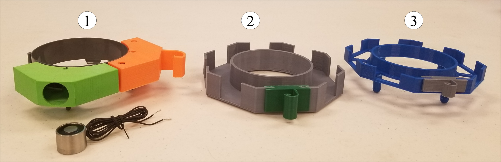
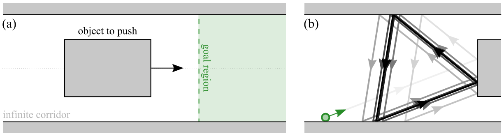
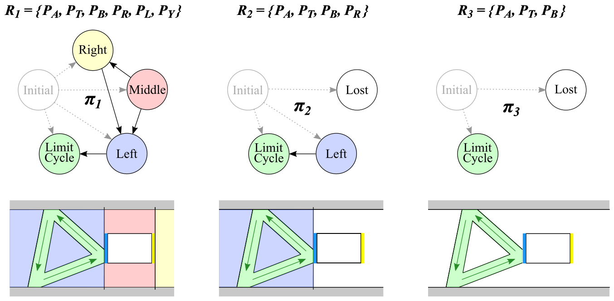
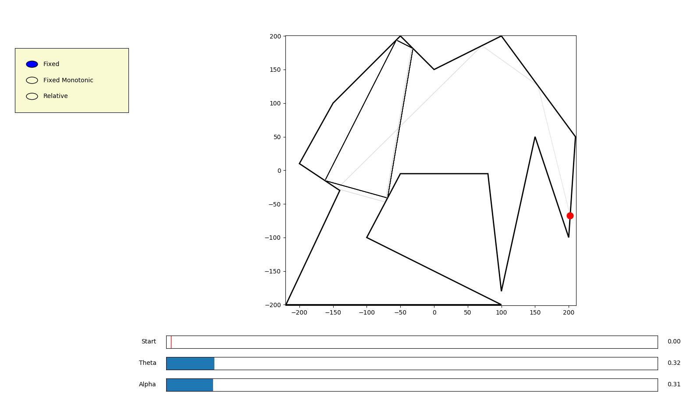
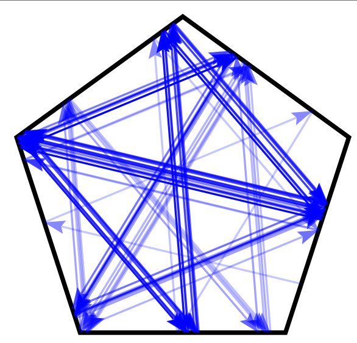

Design of Boundary Interactions for Minimalist Mobile Robots
Alli Nilles
Thesis Proposal
February 26, 2020
Outline
- Context and Related Work
- Results: Models
- Results: Dynamical Properties
- Results: Control, Planning, and Tasks
- Remaining Thesis Work
- Possible Extensions
New Frontiers in Robotics

New Technologies, New Priorities
- New materials make rigid-body, collision-avoidance approaches less necessary.
- More remote and extreme environments (including very small scales) require new hardware and software approaches.
- Need more robustness to uncertainty in sensing, actuation
- Simple, even purely reactive strategies can be easier to implement and get guarantees on behavior
Environment Boundaries Can Be Useful in the Face of Uncertainty!

Lessons from Manipulation
- Intelligent use of constraints / contact can enable robust robot behaviors
- Mason, Goldberg, Erdmann, Lozano-Pérez, etc.
Important Concepts
- preimage: set of states that reach a goal under a given action
- funnel: outer bound of reachable set for a given trajectory
- compliance: motion designed to handle unknown system constraints. Can be passive (ex: gripper design), or active (ex: force feedback).
- conformance: planning under uncertainty in initial state or actions
- belief space planning: planning over distributions on possible states
- information space planning: planning over derived information states
How can we leverage boundary interactions to make motion strategies and plans for mobile robots that can handle intrinsic uncertainty?
Definitions
- contact: state of physical touching
- collision: contact with implied mechanical interaction (friction, sliding, etc)
- boundary interaction: umbrella term; “what does the robot do when it reaches a boundary in its environment?”
- can be an analytic model (i.e., reflection law)
- can be a distribution over trajectories, data-driven
- boundaries can be walls, laser beams, GPS boundaries, etc
Jeffrey Aguilar, Tingnan Zhang, Feifei Qian, Mark Kingsbury, Benjamin McInroe, Nicole Mazouchova, Chen Li, Ryan Maladen, Chaohui Gong, Matt Travers, Ross L. Hatton, Howie Choset, Paul B. Umbanhowar, Daniel I. Goldman, “A review on locomotion robophysics: the study of movement at the intersection of robotics, soft matter and dynamical systems.”
Minimalist Boundary Interactions
- Localization with limited sensing (O’Kane, LaValle 2007)
- Localization using limit cycles (Alam, Bobadilla, Shell 2017)
- Mapping (Bitbots, LaValle et. al. 2011)
- Navigation (Tovar, Murrieta-Cit, LaValle 2007) (Lewis, O’Kane 2013)
- Coverage (Lewis, O’Kane 2013)
- Pursuit-evasion (Bitbots)
Minimalist Boundary Interactions

Lewis, J. S., & O’Kane, J. M. Planning for provably reliable navigation using an unreliable, nearly sensorless robot. The International Journal of Robotics Research, 2013.
Wild Bodies

Bobadilla, L., Sanchez, O., Czarnowski, J., Gossman, K., & LaValle, S. M. (2012). Controlling wild bodies using linear temporal logic. In Robotics: Science and Systems.
Micro-Robots

C. Bechinger, et. al. Active particles in complex and crowded environments. Reviews of Modern Physics, 2016.
Kantsler, V., et. al. Ciliary contact interactions dominate surface scattering of swimming eukaryotes. PNAS, 2013.
Bouncing Robots
Iterating the same boundary interaction can cause cycles and trapping regions:

Combinatorial changes from small perturbations:

Toward the design and analysis of blind, bouncing robots. L. H. Erickson and S. M. LaValle. ICRA, 2013
Left example inspired by Thiffeault, et. al. Microorganism billiards. Physica D: Nonlinear Phenomena, 2017
Goal 1: Robust, Predictable Movement Primitives

Goal 2: Planning and Tasks
How to get from start to goal? With minimal control complexity? How much uncertainty can a plan tolerate?
What tasks can these robots complete?
Modelling Assumptions
- Robot position modelled as a point in a polygonal environment (possibly with polygonal obstacles).
- Robots move in straight lines until they encounter a boundary.

Modelling Uncertainty

Uncertainty is unavoidable… Plan over nondeterministic bounce rules!
What kinds of error and nondeterminism does this include?
How to Implement?
- differential drive with bump sensors and side-facing range sensor (“rotate-to-parallel”)
- virtual boundaries (laser beams, GPS, visible boundaries, etc)
- contact sensor and mechanical alignment of robot body (“rotate-until-free”)
Geometry Influences Dynamics
Given geometry, parameterize points on outer boundary and obstacles.
We can explicitly compute transition function \(f\) between points on the boundary.
Geometry Influences Dynamics
\(f\) is a contraction mapping iff \(|\frac{f(x, \theta) - f(y,\theta)}{x-y} | < 1\)
For two mutually visible straight-line segments, this quantity (the contraction coefficient) is independent of \(x, y\) and depends only on \(\theta\) and the internal angle \(\phi\) between the segments.
Can be used to reduce uncertainty!
Limit Cycles
To write down a transition function for an entire cycle, compose individual transition functions until the composition is a return map.
A cycle is stable when this return map is a contraction mapping: two points under the mapping become closer together.
Proposition: For all start points on the boundary of all polygons, a constant fixed-angle controller exists which will cause the robot’s trajectory to enter a stable limit cycle.
Results: Nondeterministic Planning
Approach
Planning Problem: Given start and goal sets on the boundary of the polygonal environment, create a sequence of safe nondeterministic actions that takes the robot from any point in the start set to some point in the goal set.
- Partition boundary using “visibility events”
- Create safe edge-to-edge transition graph using boundary segments
- Search for paths and cycles (depending on specification)
- Translate paths to strategies
Nondeterministic Planning
We know the exact map of the environment at planning time.
Bounce rule: action to take at boundary, convex subset \(u \subseteq (0, \pi)\).
Planner produces sequence of bounce rules.
Visibility Decomposition
Equivalence relation on points along boundary with respect to what edges of original polygon they can “see”.

Defining Safe Actions
Safe actions: Given two edges (\(e_{start}\) and \(e_{goal}\)) in the environment polygon, an interval of bounce angles is safe iff:
any action in the interval,
executed from any point on \(e_{start}\),
will cause the robot to transition to some point on \(e_{goal}\).
Examples of Search Queries
If we want to give our robot a constant control input, can use breadth-first search with constraint intersection.

Examples of Search Queries
We can search while bounding the maximum distance travelled by the robot by labelling each edge with the maximum distance travelled by any transition represented by that edge.
Can search for only contracting paths, or keep the total state expansion/contraction under a bounded amount.
Of all paths from A to B (up to bounded length), which allows the most unreliable robot?
In all cases, along with a plan, we also get a characterization of how much uncertainty the plan can tolerate (design constraints!)
Completeness and Correctness
This is an exact planner, so all found solutions are correct, and it will not return any infeasible plans.
However, it is not complete, for three reasons:
- currently does not take into account knowledge about initial conditions
- does not allow state splitting during the search (robot state is maintained as one contiguous set of points along the environment boundary)
- does not take into account how some state transitions reduce uncertainty
Applications, Tasks, and Interfaces
Directed Self-Assembly and Manipulation
Di Leonardo, Roberto, et al. “Bacterial ratchet motors.” Proceedings of the National Academy of Sciences (2010)
Klavins, Eric. “Programmable self-assembly.” IEEE Control Systems Magazine 27, 2007.
Weaselball Hub Design
 
Next step: controllable detaching (electro-permanent magnets or shape-memory alloys)
Assembly Example

Nilles, A., Wasserman, J., Born, A., Horn, C., Born, J., & LaValle, S. M. (2019, August). A Hardware and Software Testbed for Underactuated Self-Assembling Robots. In 2019 International Symposium on Multi-Robot and Multi-Agent Systems (MRS) (pp. 7-9). IEEE.
Key Research Insights and Questions
- Control of macro states (“pressure”, “temperature”) could enable manipulation and other useful tasks.
- Robot-robot interactions affect these macro-states.
- Robot-boundary interactions affect these macro-states.
- How to tune and design these interactions?
Manipulation (WAFR 2020)

Manipulation (WAFR 2020)

Interesting Takeaways
- movement primitives lend themselves well to abstraction
- given information history, three types of state estimation:
- what states could I have started in to create this information history?
- what states could I currently be in?
- what states could I reach in the future (with a given controller)?
Corralling

Interfaces and Design

Interfaces and Design
with Dr. Amy LaViers. Choreographers and movement observers have lots of technologies for specifying movement! Published MOCO 2018.
Remaining Goals and Approach
Main Goal: “The Bouncing Robot Design Game”
Combine and extend work so far into an interactive tool for designing bouncing robot systems.
Space of possible systems designs is large!
I see this as a first step toward a CAD tool for micro-robotic assembly systems.
System Sensor Placement
Proposed first sensors:
- colored “laser beams” that emit a signal when they are crossed by a robot
- chemical comparators and globally switchable chemical “sources”
Most useful sensors are ones with computable spatial preimages, because they induce a natural environment discretization. Can compare and optimize wrt planner discretization.
Abstractions on Dynamics
Given initial conditions and a controller:
- visualize and bound persistent states, using contraction properties
- analyze ergodicity for coverage applications?
Both of these could be “data-driven” over forward simulations of the nondeterministic dynamical system. Also plan to continue work on analytical characterizations of the dynamical systems.

Stretch goal
LTL specifications and plan synthesis
“eventually reach region A…”
“stay in region B until…”
Conclusion
- “Bouncing robot” model is cool and applies to a wide range of physical systems!
- Compliance and minimalism are cool principles and still useful!
- Lots of very cool problems to work on, especially when looking at sensor models / information spaces / low-complexity controllers.